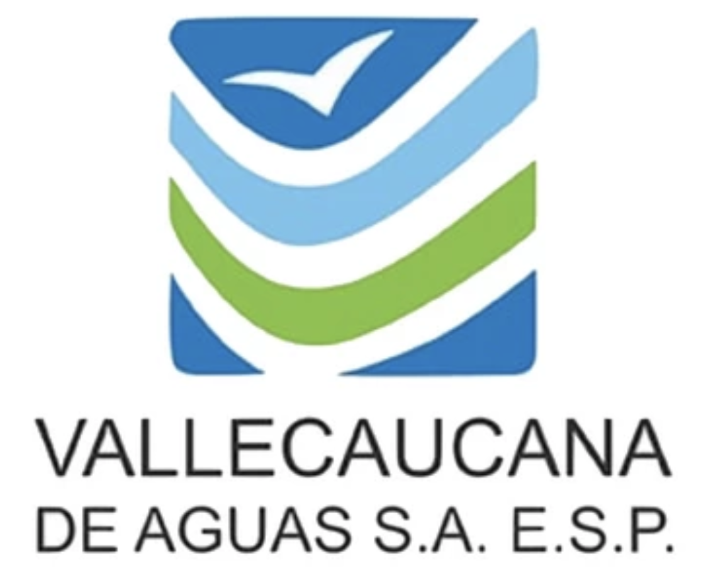

Diagnóstico de acueductos por municipio
Color = porcentaje de acueductos con estado operativo conocido<25%25–49%50–74%75–99%100%


RESPUESTA SANITARIA POSTEVENTO · AGUA PARA CONSUMO HUMANO
Diagnóstico interinstitucional para orientar recuperación, priorización técnica e inversión posterior al evento sísmico.
Diagnóstico territorial, condición operativa de los acueductos afectados y necesidades principales de recuperación.
Seleccione un municipio en el mapa para consultar su diagnóstico.
Acueductos afectados, población afectada reportada e inversión aproximada.
Fichas de los 98 acueductos con afectación identificada, presentadas en formato visual para consulta rápida.
Orden inicial de atención a partir de la prioridad propuesta en el consolidado V1.2, estado operativo y población afectada reportada.
| Prioridad | Municipio | Acueducto | Operación | Población afectada | Afectación principal | Qué se debe hacer | Inversión |
|---|
Valor aproximado consolidado adoptado en la V1.2, incluyendo intervenciones de acueducto y alcantarillado.
| # | Municipio | Acueducto / sistema | Prioridad | Operación | Inversión aproximada | Acción requerida |
|---|
Definiciones breves para mantener una lectura consistente de diagnóstico, afectación e inversión.